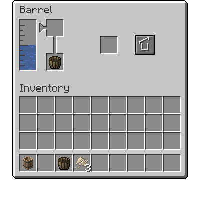

통은 아이템과 액체를 보관할 수 있는 장치입니다. 중앙 슬롯에는 아이템을 넣을 수 있습니다. 액체는 왼쪽에 있는 칸에 보여지며, 양동이나 주전자를 왼쪽 위 슬롯에 넣어 추가할 수 있습니다. 같은 슬롯에 빈 양동이나 주전자를 넣으면 액체를 제거할 수 있습니다. 아니면 양동이를 들고 통에 오른쪽 버튼을 눌러도 됩니다.

통 인터페이스.
통은 밀봉될 수 있습니다. 통을 밀봉하면 부숴도 내용물이 보존됩니다. 통으로는 또한 여러 가지 아이템을 제작할 수 있습니다. 인터페이스에서 오른쪽의 회색 버튼으로 밀봉 상태를 조절할 수 있습니다. 웅크린 채로 통을 클릭해도 밀봉 상태를 조절할 수 있습니다.
통은 여러 액체들과 아이템을 섞기 위한 중요한 장치입니다. 통 제작법으로 제작하기 위해서는 통이 올바른 비율의 액체와 아이템으로 채워져야 합니다. 어떤 제작법은 통을 밀봉하고 기다려야 완성할 수 있습니다.
통에 있는 아이템과 액체의 비율이 조합법과 맞지 않다면, 초과된 액체나 아이템은 소멸됩니다. 그러나 제작법이.
제작법: tfc:barrel/limewater
석회수는 물이 담긴 통에 플럭스를 넣어 만듭니다. 하나의 플럭스당 500 mB의 물을 석회수로 바꿉니다. 석회수는 가죽 제작이나 회반죽을 만드는 데 사용됩니다.
제작법: tfc:barrel/tannin
탄닌은 물 이 담긴 통에 특정한 원목을 녹여 만드는 산성 용액입니다. 참나무, 자작나무, 밤나무, 더글러스 전나무, 히코리나무, 단풍나무, 세쿼이아 원목으로 탄닌을 만들 수 있습니다.
어떤 통 제작법은 두 개의 액체를 섞어서 제작됩니다. 이 작업은 하나의 재료로 채워진 통에 다른 재료로 채운 양동이를 액체 추가 슬롯에 넣어서 진행할 수 있습니다. 이런 방식의 제작법에는 식초를 우유가 담긴 통에 9:1 비율로 추가해서 만드는 버터밀크 등이 있습니다. 식초를 같은 비율로 바닷물에 추가하면 염수가 됩니다.
통은 또한 뜨거운 아이템들을 식힐 수 있습니다. 물, 올리브유, 또는 바닷물이 담긴 통에 뜨거운 아이템을 넣으면 아이템의 온도가 빠르게 낮아집니다.
통에서는 아이템을 염색하고 탈색할 수 있습니다. 염료 아이템을 냄비에서 끓이면 액체 염료를 만들 수 있습니다. 양탄자, 초, 석고 등 거의 모든 색깔 있는 아이템들은 염료가 담긴 통에 밀봉하여 염색할 수 있습니다. 염색된 아이템들은 잿물이 담긴 통에 밀봉하여 탈색할 수 있습니다. 잿물은 물이 담긴 냄비에 나뭇재를 끓여 만들 수 있습니다. 나뭇재는 모닥불을 부수어 얻을 수 있습니다.
통은 식초로 음식을 보존할 수 있습니다. 식초는 과일을 술이 담긴 통에 밀봉하여 만들 수 있습니다. 자세한 내용은 여기에서 확인할 수 있습니다.